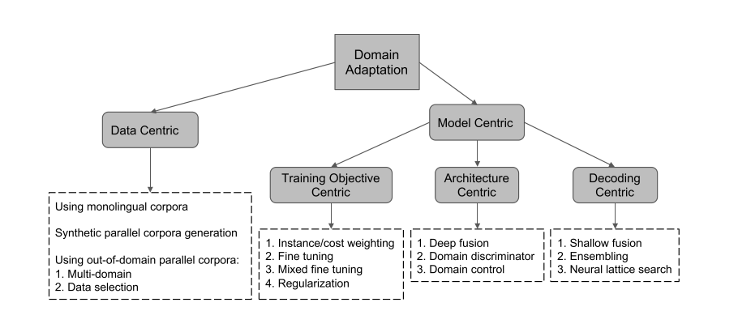

论文提出背景
论文首先提出当前的技术在领域适应机器翻译(domain-specific machine translation)方面的不足:
- 除了英语或者某些欧洲语系的语言，高质量的平行语料并不充足
- 缺少领域语料
- SMT 和 NMT 在low-resource的场景下，领域适应翻译都做的不好
总而言之一句话:
for the majority of language pairs and domains, only few or no parallel corpora are available.
而后论文又点出了领域适应机器翻译的重要性。
- 现实场景中领域适应的机器翻译应用比通用机器翻译更广泛
- 在相关领域内，通用机器翻译的效果通常差于领域适应的机器翻译
最后作者给出了Domain Adaptation for Neural Machine Translation的定义:
Leveraging out-of-domain parallel corpora and in-domain monolingual corpora to improve in-domain translation is known as domain adaptation for MT
论文主要解决的问题
怎样利用out-of-domain语料来提升in-domain machine translation的性能, 同时，相似的方法也可以被迁移到low resource language的翻译上去
SMT怎样解决Domain Adaptation
作者提出了2个方向: 一是从数据入手，二是从模型入手

Data Centric
Data Centric, 顾名思义，就是从数据入手，重点关注数据如何被使用。作者将SMT用到的data分为3类:
- In-domain monolingual corpora
- Synthetic corpora
- Parallel corpora
Out-of-domain data充足的scenario
- 关键词: Selection
使用in-domain数据和out-of-domain数据来分别训练模型，并且用这2个模型给out-of-domain data打分，最后根据分数来从out-of-domain data里选择出一部分data来训练in-domain模型。 - 打分模型可以使用: (1) Language Model (2) Joint models (3) CNN models
平行语料不足的scenario
- 关键词: Generation
- 生产伪平行语料（句对）:
- Using Information Retrieval
- Using Self-enhancing or parallel word embeddings
- 生产单语n-grams和平行短语对(phrase pairs)
大多数Data Centric方法都可以应用在NMT上，但是，由于大多数方法使用的data selection 或者generation的criteria和NMT没有联系，所以这些方法不能明显提升NMT
Model Centric
Model Centric指的是从利用不同领域的模型入手来解决Domain Adaptation问题(感觉又废话了)，入手点可以是:
1）Model level interpolation
不同的翻译模型，各自在不同的语料上训练。这些模型之后被组合，可以得到最好的效果。
2) Instance level interpolation
也即instance weighting, 给每个instance加不同的权重，来进行训练。或者，用data re-sampling的方法给语料加权重。
- 修改目标函数
- 修改NMT网络架构
- 修改解码算法
Model level interpolation
- 关键词: 模型集成
用不同的语料去训练不同的模型，最后集成这些模型去取的一个更强的模型
Instance level interpolation
- 关键词: Instance weighting
- 先用规则或者统计的方式给每个instance加权重，然后训练模型的时候带上权重。
- 使用re-sampling来计算权重
对于NMT, model level interpolation对应了ensemble技术，instance level interpolation在NMT中的体现是: 在目标函数中赋权值
4. NMT怎样解决Domain Adaptation
Data Centric
使用in-domain monolingual corpora
使用Synthetic Parallel Corpora
- back translation
- joint training
使用Out-of-domain Parallel Corpora
训练混合领域的机器翻译模型，使得它可以在提升in-domain翻译效果的同时不损害out-of-domain的效果。
- Multi-domain model
- 给源端句子加上domain相关的tag
- 对小语料进行上采样，来保证训练语料的平衡性
- Data selection
使用SMT的data selection方法，并不能很好地提升NMT的性能，因为这里使用的数据选择的criteria和NMT不一致。
- Wang et al. (2017a) 提出，使用句子的embedding来从out-of-domain语料中挑选出和in-domain语料相近的句子
- Van der Wees et al. (2017) 提出了一种动态的数据选择方法，在不同的training epoch选择不同的训练集子集来进行训练。实验结论是: “gradually decreasing the training data based on the in-domain similarity gives the best performance.”
ps:目前(截止2018年6月论文发表时)并没有论文尝试结合以上data centric的方法
Model centric
Training objective centric
这类方法指的是改变训练目标函数，或者改变优化的方法。
- Instance weighting:
- Cost weighting:
- Chen et al. (2017a) 使用domain classifier来修改cost function: 使用dev data训练domain classifier, 其的输出成为cost function中的domain权重。
- Wang et al. (2018) 提出joint framework of sentence selection and weighting for NMT
- Fine tuning: 先在out-of-domain语料上训练模型，然后在in-domain corpus上进行fine tune。
- Mixed Fine Tuning: 在fine tune的时候混合上out-of-domain corpus
- Regularization:
Architecture centric
在这类方法中，NMT的架构被修改。
- Deep Fusion： 在decoder端融合，深度融合in-domain RNNLM和NMT 成一个decoder(方法: concatenating hidden states )
- Domhan and Hieber (2017)提出可以同时训练RNNLM和NMT
- Domain discriminator
在encoder基础上加上一层FFNN,作为判别器，使用attention来预测句子的domain。判别器和NMT网络同时优化。 - Domain control
- 在embedding层加入word-level feature的方法来加入domain信息。在每一个word上加上domain tag。
- 使用TF-IDF的方法来预测input sentence的domain tag
Decoding centric
关注decoding算法。
- Shallow Fusion: next word hypotheses generated by an NMT model is rescored by the weighted sum of the NMT and RNNLM probabilities
- Ensemble: ensemble the out-of-domain domain and the fine tuned in-domain models
- Neutral Lattice Search: ??
真实场景下的领域适应
未来探索方向
- Multilingual and Multi-Domain Adaptation
- Adversarial Domain Adaptation and Domain Generation